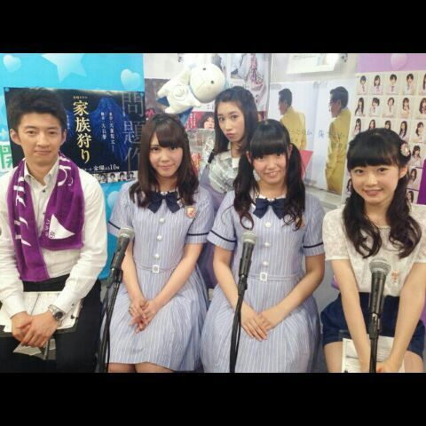
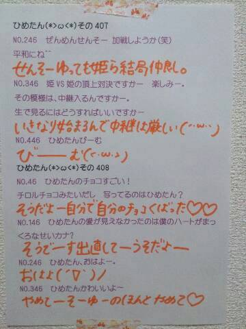

| 2014/06 30 Mon | ひめたん-OoO-その455 |

アンダーライブ
in六本木ブルーシアター
2日間4公演が終わりましたヽ(・∀・)ノ
観に来てくださってありがとうございます☆
感想はーそうですねー
意味もなくながーく語ったらごめんねー
はじめに、私たちアンダーメンバーのために
今回ステキな舞台を用意していただけたことが
とても幸せだなと思いました。
このライブを通して
私たちのことをもっともっと知ってもらいたいし
乃木坂って選抜だけやないやん
アンダーってすっげーやん！って
みなさんに少しでも思ってもらいたい
私たちだって前で歌いたいし
パフォーマンスをしっかり見て欲しい
その一心で頑張ってきたつもりです
アンダーライブは
アンダーメンバーひとりひとりが
主役になれる舞台
それぞれ特別な思いを馳せて
何かを懸けて取り組んでるもの、
だと私は思っていて。
みんなはどうなんだろう
私にとってアンダーライブは
特別かわいい、
特別愛おしい存在です(＊^ω^＊)
乃木坂に入ってから
いろんな活動をやらせていただけて
それぞれにやりがいがあるけど
やっぱり私は歌い手として
パフォーマンスしてる時が一番楽しい。
ああー私、
歌うの好きだわって
改めて感じた2日間でした☆
乃木坂46みんなでのライブも好きだけど
やっぱりアンダーライブのあの
みんながハングリーな感じは気持ちいい。
ひめたんは結構どーぞどーぞな人だけど
アンダーライブのリハの時は
たまに意見ゆったりもするんだー(・∀・)えっへん
アンダーライブは他のライブよりも
自分たちも構成にちょっと携わってたりして
あーでもないこーでもないをよくやるので
ファンのみなさんからいい反応が来ると
もんのっすっごく嬉しいです♪
あれ？って空気を感じるのも
それはそれで勉強になるので
たまにはアリなんかなーとか思ったり(笑)
会場もまた客席とステージが近くてね！
最近の乃木坂にはないくらい
ファンのみなさんとの距離が近くて
コールが直に肌に伝わってくるあの感じ
もう最高です((o(。・ω・。)o))
ひめたんびーむの「わー
 」も
」も
ひめたんタオル
ひめたんうちわ
ひめたんTシャツも
ひめたんコールも全部ぜんぶ宝物です(＊^v^＊)
ぴんくのサイリウムも
ひめたん好きな色だから
勝手に嬉しくなってわーってなってるー♪
ひめたんのためじゃないぜ
僕の私の推しメンもぴんく好きなんだぜって方
なんかごめんね許してねー(笑)
とにかく楽しかった！
ステキな時間をありがとうございました！
このあとのアンダーライブに参加予定の方は
もっともっとパワーアップしたライブを
お届けできるよう頑張るので
楽しみにしててください♪
ライブいったよーってかた
よかったら感想きかせてきかせて／(^o^)＼

あっそうそう
開運から河内美里さん加藤一華さんが
アンダーライブ遊びに来てくださいました！
ラジオのお仕事終わってから
駆けつけてくださったと聞きました♪
お忙しい中 ありがとうございました(＊^O^＊)
次回の開運も乃木回！
お楽しみにっ
Cool-up Girl's発売中です
インタビューページ多めと聞いてます
チェックよろしくお願いします(＊^^＊)
ひめたんの日記の
コメント欄下２ケタに46を踏んだ方へ
手書きでコメ返するコーナー
＼ ひめたん46 ／

いつもコメントたくさん
ありがとうございます
質問返しはまた次回にさせてくださいな
乃木のの、乃木どこも次回！
(＊´・ω・＊)
コメント(858)
2014/06/30 00:30